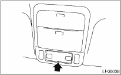
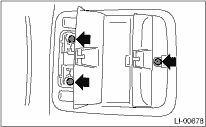

LIGHTING SYSTEM > Spot Map Light
1. Disconnect the ground cable from the battery.
2. Insert a flat tip screwdriver into the notch on the lens and remove it by prying.

3. Remove the spot map light mounting screw.

4. Disconnect the harness connectors and remove the spot map light.